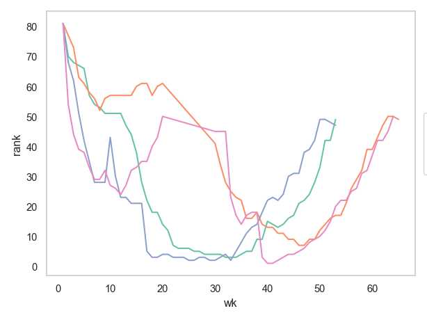
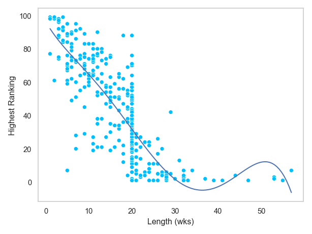

# numerical calculation & data framesimport numpy as npimport pandas as pd# visualizationimport matplotlib.pyplot as pltimport seaborn as snsimport seaborn.objects as so# statisticsimport statsmodels.api as sm# pandas optionspd.set_option('mode.copy_on_write', True) # pandas 2.0pd.options.display.float_format ='{:.2f}'.format# pd.reset_option('display.float_format')pd.options.display.max_rows =7# max number of rows to display# NumPy optionsnp.set_printoptions(precision =2, suppress=True) # suppress scientific notation# For high resolution displayimport matplotlib_inlinematplotlib_inline.backend_inline.set_matplotlib_formats("retina")
Song rankings for Billboard top 100 in the year 2000
billboard = pd.read_csv("../data/billboard.csv")billboard.head(5)
artist track date_entered wk1 wk2 wk3 wk4 \
0 2 Pac Baby Don't Cry (Keep... 2000-02-26 87 82.00 72.00 77.00
1 2Ge+her The Hardest Part Of ... 2000-09-02 91 87.00 92.00 NaN
2 3 Doors Down Kryptonite 2000-04-08 81 70.00 68.00 67.00
3 3 Doors Down Loser 2000-10-21 76 76.00 72.00 69.00
4 504 Boyz Wobble Wobble 2000-04-15 57 34.00 25.00 17.00
wk5 wk6 wk7 ... wk67 wk68 wk69 wk70 wk71 wk72 wk73 wk74 \
0 87.00 94.00 99.00 ... NaN NaN NaN NaN NaN NaN NaN NaN
1 NaN NaN NaN ... NaN NaN NaN NaN NaN NaN NaN NaN
2 66.00 57.00 54.00 ... NaN NaN NaN NaN NaN NaN NaN NaN
3 67.00 65.00 55.00 ... NaN NaN NaN NaN NaN NaN NaN NaN
4 17.00 31.00 36.00 ... NaN NaN NaN NaN NaN NaN NaN NaN
wk75 wk76
0 NaN NaN
1 NaN NaN
2 NaN NaN
3 NaN NaN
4 NaN NaN
[5 rows x 79 columns]
총 몇 명의 가수(artist)가 차트에 있으며, 가수별로 몇 곡(track)이 차트에 들어있는지 알아보세요. (동명이인은 없다고 가정하고)
곡명은 같지만, 가수가 다른 곡이 있는지 알아보고, 서로 다른 노래가 차트에 몇 개나 있는지 알아보세요. 살펴보았다면, 이후 grouping시 artist와 track을 함께 사용해야함을 이해했을 겁니다.
5.2 seaborn.objects를 이용해 대략 다음과 같이 주에 따른 순위의 변화를 그려보세요. 
(가수별) 곡별로 차트에 머문 기간(weeks)과 가장 높이 올라간 순위를 구해서, 높은 순위를 달성한 곡일수록 차트에 더 오래 머물었는지 알아봅니다.
6.1 곡별로 차트에 머문 기간을 DataFrame으로 구하고; .reset_index(name=" ") 이용
6.2 곡별로 최상위 순위를 min()을 이용해 DataFrame으로 구한 후
6.3 이 두 DataFrame을 merge()를 이용해 합친 후
6.4 seaborn.objects를 이용해 머문 기간에 따른 최상위 순위에 대한 관계를 아래와 같이 scatterplot으로 살펴보세요.
눈에 띄는 점을 간단히 기술해보세요.

순위 1위를 달성한 곡들에 한해, 차트에 진입시 순위와 1위에 처음 도달한 주(week)의 정보가 다음과 같이 표시되도록 구해보세요.
함수를 만들고; min()과 argmin()이 필요할 수 있음
apply()로 그 함수를 적용하여 구해보세요.
# artist track wk rank# 0 Aaliyah Try Again 1 59.00# 1 Aaliyah Try Again 14 1.00# 2 Aguilera, Christina Come On Over Baby (A... 1 57.00# 3 Aguilera, Christina Come On Over Baby (A... 11 1.00# 4 Aguilera, Christina What A Girl Wants 1 71.00# 5 Aguilera, Christina What A Girl Wants 8 1.00...
빠르게 1위가 된 곡일 수록 빠르게 차트에서 사라졌을까를 알아보기 위해, 7번의 결과를 이용해 다음과 같이 변형해보세요.
즉, 차트 진입시의 순위 정보와, 1위가 된 week의 정보만을 취해, 그 비율(rate)를 구하면, 얼마나 빠르게 1위가 되었는지 알 수 있습니다.
# artist track wk rank rate# 0 Aaliyah Try Again 14 59.00 4.21# 1 Aguilera, Christina Come On Over Baby (A... 11 57.00 5.18# 2 Aguilera, Christina What A Girl Wants 8 71.00 8.88# 3 Carey, Mariah Thank God I Found Yo... 11 82.00 7.45# 4 Creed With Arms Wide Open 27 84.00 3.11# 5 Destiny's Child Independent Women Pa... 9 78.00 8.67# ...